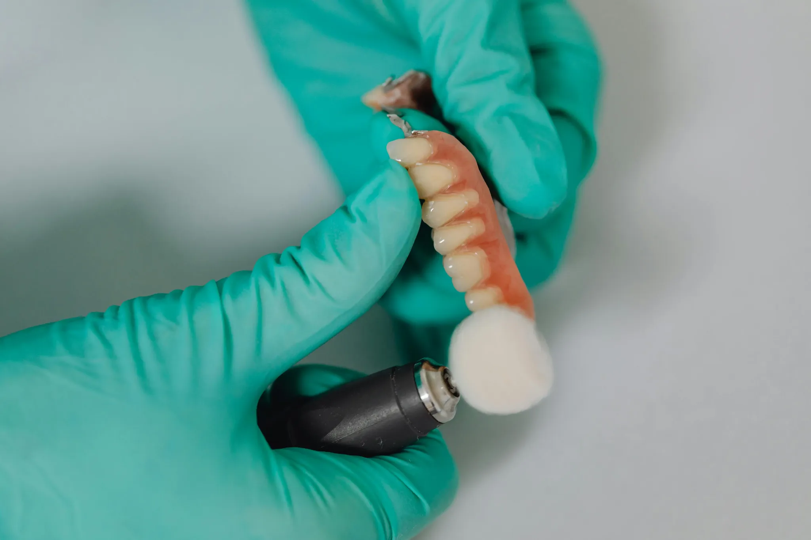

Usługi
Naprawy
Naprawy i korekty prac protetycznych. Najpierw ocena, następnie konkretna informacja o możliwościach i terminie.

Jak podchodzimy do napraw
- OcenaSprawdzamy zakres i ryzyko korekty.
- PropozycjaPodajemy najlepszą opcję i realny termin.
- RealizacjaNaprawa zgodnie z ustaleniem i kontrola efektu.
Współpraca B2B
Jeśli gabinet potrzebuje szybkich napraw, ustalamy stały i czytelny tryb przekazywania prac.